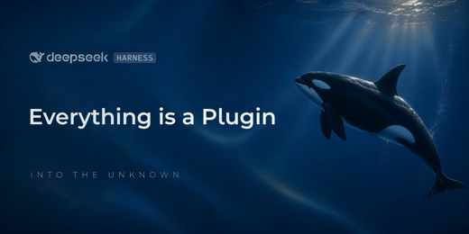

92Tier 0 · 特别关注｜DSH
001DeepSeek Harness 发布预览版 v0.2.2-rc.5：DeepSeek 模型改用服务端搜索，且不按次收费
四维 80×1.15 Tier 0≈ 92
官方仓库 deepseek-ai/deepseek-harness 于 11 月 18 日 20:51（上海时间）发布预览版 v0.2.2-rc.5。发布说明写明的体验变化是：DeepSeek 模型改用 DeepSeek 服务端搜索，搜索不按次收费；其他模型默认使用 DeepSeek Search API。此前的 rc.4 发布于窗前，rc.3 已在 11 月 13 日晚报出过卡，本条只依据 rc.5。
💡 点评这是 DSH 本体的又一次预览版，重点不在新插件，而在把 DeepSeek 模型的搜索改成服务端、并不再按次计费。还在 rc，接口和默认行为变了的话，已经在用的人可以看一眼发布说明再决定要不要跟上。
来源：GitHub Releases（deepseek-ai/deepseek-harness）